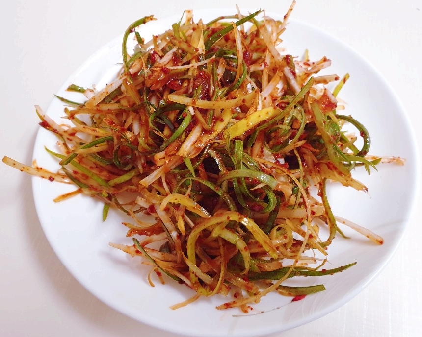

Ingredients
- 2-3 Stalks of Large Green Onions
- For Seasoning:
- 3 Tbsp Soy Sauce
- 2 Tbsp Red Chili Powder
- 2 Tbsp Vinegar
- 1 Tbsp Sugar
- 1 Tbsp Minced Garlic
- 1 Tbsp Sesame Oil
- A Sprinkle of Sesame Seeds
Steps
- Using a green onion shredder or knife, slice the green onions into thin strips.
- Soak the sliced green onions in cold water for 10 minutes to remove the sharpness. Drain thoroughly.
- In a bowl, combine all the seasoning ingredients to make the sauce.
- Pat dry the green onions completely with a kitchen towel to remove any remaining water.
- Mix the sauce with the green onions, tossing gently to coat evenly.
- Serve as a perfect side dish for grilled meats or other main courses.